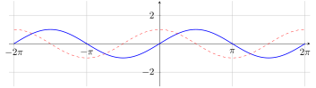
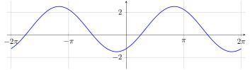
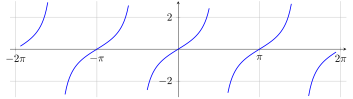
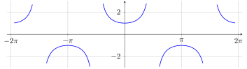
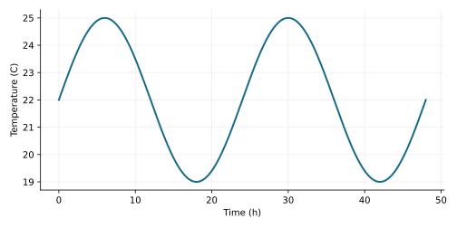

Trigonometric Functions and Their Graphs
Opening context: periodic signals in health sciences
Breathing, heart rhythms, daily temperature cycles, and rotating sensors motivate the study of periodic functions. This chapter develops graph-based and algebraic models from the unit-circle ideas of Chapter 8.
Learning outcomes
Students will sketch and interpret sine, cosine, tangent, cotangent, secant, and cosecant; identify amplitude, midline, period, and phase shift; construct periodic models from data; solve basic trigonometric equations; and use R and Python to investigate model behavior.
Prerequisite check
Review radians, the unit circle, exact values at multiples of \(\pi/6\) and \(\pi/4\), and function transformations from Chapter 5.
Computational workflow
For each investigation, first predict the mathematics, then run the R listing, followed by the equivalent Python listing. The listings are deliberately sequential rather than side-by-side.
From circular motion to periodic functions
A point rotating counterclockwise on the unit circle through angle \(t\) has horizontal and vertical coordinates \(\cos t\) and \(\sin t\). Plotting these coordinates against \(t\) creates the cosine and sine graphs. A periodic function satisfies \(f(t+P)=f(t)\) for all inputs in its domain and some \(P>0\); the smallest such positive \(P\), when it exists, is the fundamental period. For sine and cosine, \(P=2\pi\). Unlike the circle itself, the graph of sine has horizontal input measured in radians and vertical output measured as a coordinate.
Example. Find \(\sin(13\pi/6)\) and explain the repetition. Since \(13\pi/6=2\pi+\pi/6\), periodicity gives \(\sin(13\pi/6)=1/2\).
Guided practice. Use periodicity to evaluate \(\cos(-11\pi/3)\) and \(\sin(17\pi/4)\) without a calculator.
Reasoning check.
Explain which conclusions follow from exact mathematics and which depend on a modeling assumption. State the domain and units where appropriate.
Graphing sine and cosine
The five quarter-period points of \(y=\sin x\) on \([0,2\pi]\) are \((0,0)\), \((\pi/2,1)\), \((\pi,0)\), \((3\pi/2,-1)\), and \((2\pi,0)\). For \(y=\cos x\), the corresponding outputs are \(1,0,-1,0,1\). Smoothness between these points is important: connecting them with straight lines would not reproduce the trigonometric functions. Both have domain \(\mathbb R\) and range \([-1,1]\). Sine is odd, \(\sin(-x)=-\sin x\); cosine is even, \(\cos(-x)=\cos x\).
Example. Locate all maxima of \(\cos x\) on \([-2\pi,2\pi]\). They occur at \(-2\pi,0,2\pi\).
Guided practice. Sketch two full cycles of sine and cosine; label zeros, extrema, and the period.
Reasoning check.
Explain which conclusions follow from exact mathematics and which depend on a modeling assumption. State the domain and units where appropriate.

Amplitude, midline, and vertical changes
Consider \(y=A\sin x+D\) or \(y=A\cos x+D\). The amplitude is \(|A|\) and the midline is \(y=D\). When \(A\ne0\), the range is \([D-|A|,D+|A|]\). A negative \(A\) reflects the basic curve about its midline. Amplitude is a nonnegative distance, never a signed quantity.
Example. For \(y=-3\cos x+2\), the amplitude is \(3\), midline \(2\), maximum \(5\), and minimum \(-1\). At \(x=0\), the output is \(-1\).
Guided practice. Determine amplitude, midline, maximum, and minimum for \(y=4\sin x-1\) and \(y=-\tfrac12\cos x+3\).
Reasoning check.
Explain which conclusions follow from exact mathematics and which depend on a modeling assumption. State the domain and units where appropriate.
Period and horizontal scaling
For \(y=A\sin(Bx)+D\) and \(y=A\cos(Bx)+D\) with \(B\ne0\), the fundamental period is \(P=2\pi/|B|\). The parameter \(B\) controls the horizontal scale, not the amplitude. Larger \(|B|\) means more cycles in the same interval. The quarter-period is \(P/4\), useful when constructing graphs by hand.
Example. For \(y=2\sin(3x)\), the period is \(2\pi/3\) and quarter-period \(\pi/6\). Starting at \(x=0\), the five key outputs are \(0,2,0,-2,0\).
Guided practice. Find the periods of \(\cos(x/4)\) and \(\sin(-5x)\) and sketch one cycle of each.
Reasoning check.
Explain which conclusions follow from exact mathematics and which depend on a modeling assumption. State the domain and units where appropriate.
Phase shifts and the complete sinusoidal model
A flexible model is \(f(x)=A\sin(B(x-C))+D\) or \(A\cos(B(x-C))+D\). Here \(C\) shifts the graph horizontally to the right when positive. The period remains \(2\pi/|B|\); \(D\) sets the midline. The equivalent expression \(A\sin(Bx+\phi)+D\) has phase shift \(-\phi/B\) (when \(B\ne0\)). It is essential to factor \(B\) before reading the shift.
Example. Rewrite \(2\sin(3x-\pi)+1\) as \(2\sin(3(x-\pi/3))+1\). Its amplitude is \(2\), period \(2\pi/3\), right shift \(\pi/3\), and midline \(1\).
Guided practice. Identify the four parameters of \(-4\cos(2(x+\pi/6))-3\) and draw a key-point table.
Reasoning check.
Explain which conclusions follow from exact mathematics and which depend on a modeling assumption. State the domain and units where appropriate.

Constructing a sinusoid from a graph or data
When a graph has maximum \(M\) and minimum \(m\), compute \(A=(M-m)/2\) and \(D=(M+m)/2\). Measure the horizontal separation between consecutive peaks to obtain \(P\), then set \(|B|=2\pi/P\). Choose sine or cosine and determine a shift using a known maximum or midline crossing. Multiple equivalent formulas may represent the same function.
Example. A periodic measurement has maximum \(9\), minimum \(3\), and successive maxima at \(t=2\) and \(t=10\). Then \(A=3\), \(D=6\), \(P=8\), and a cosine model is \(f(t)=6+3\cos(\pi(t-2)/4)\).
Guided practice. Build a cosine model for maximum \(12\), minimum \(4\), and peaks at \(t=1\) and \(t=7\).
Reasoning check.
Explain which conclusions follow from exact mathematics and which depend on a modeling assumption. State the domain and units where appropriate.
Tangent and cotangent graphs
Since \(\tan x=\sin x/\cos x\), tangent is undefined at \(x=\pi/2+k\pi\). These are vertical asymptotes. Tangent has period \(\pi\), range \(\mathbb R\), and zeros at \(k\pi\). The cotangent function \(\cot x=\cos x/\sin x\) is undefined at \(k\pi\) and has zeros at \(\pi/2+k\pi\). Both require careful domain analysis; asymptotes are not points on the graph.
Example. For \(y=\tan(2x)\), the period is \(\pi/2\), and asymptotes satisfy \(2x=\pi/2+k\pi\), giving \(x=\pi/4+k\pi/2\).
Guided practice. Find all zeros and asymptotes of \(y=\tan(x-\pi/4)\) on \([-\pi,\pi]\).
Reasoning check.
Explain which conclusions follow from exact mathematics and which depend on a modeling assumption. State the domain and units where appropriate.

Secant and cosecant graphs
The reciprocal functions are \(\sec x=1/\cos x\) and \(\csc x=1/\sin x\). They have no outputs strictly between \(-1\) and \(1\). Their domains exclude zeros of the denominator, creating vertical asymptotes. Their graph branches touch \(y=\pm1\) at extrema of the corresponding sine or cosine graph.
Example. \(\csc x\) is undefined at \(k\pi\), has value \(1\) at \(\pi/2+2k\pi\), and value \(-1\) at \(3\pi/2+2k\pi\).
Guided practice. Explain why \(\sec x\) cannot equal \(0.5\) for any real \(x\).
Reasoning check.
Explain which conclusions follow from exact mathematics and which depend on a modeling assumption. State the domain and units where appropriate.

Inverse trigonometric functions and restricted domains
Sine, cosine, and tangent are not one-to-one on their full natural domains, so inverse functions require restricted branches. \(\arcsin:[-1,1]\to[-\pi/2,\pi/2]\), \(\arccos:[-1,1]\to[0,\pi]\), and \(\arctan:\mathbb R\to(-\pi/2,\pi/2)\). These return principal values; solving an equation like \(\sin x=a\) requires periodic families of solutions.
Example. \(\arcsin(1/2)=\pi/6\), but \(\sin x=1/2\) has solutions \(x=\pi/6+2k\pi\) or \(x=5\pi/6+2k\pi\).
Guided practice. Evaluate \(\arccos(-1/2)\) and solve \(\cos x=-1/2\) on \([0,2\pi)\).
Reasoning check.
Explain which conclusions follow from exact mathematics and which depend on a modeling assumption. State the domain and units where appropriate.
Modeling periodic health-science measurements
Periodic models approximate repeating measurements such as breathing displacement, circadian variation, and instrument oscillations. Parameters must have units: \(A\) and \(D\) share the response unit, \(B\) has radians per unit time, and \(C\) has time units. A sinusoid is a descriptive approximation; actual biological signals may be noisy, asymmetric, and nonstationary.
Example. A simplified respiratory displacement is \(d(t)=1.5\sin(\pi t/2)\) cm. Its amplitude is \(1.5\) cm and period \(4\) seconds, corresponding to \(15\) cycles per minute.
Guided practice. A model \(T(t)=37+0.4\cos(\pi(t-4)/12)\) gives temperature in degrees Celsius with \(t\) in hours. Identify its period, midline, maximum, and time of a peak.
Reasoning check.
Explain which conclusions follow from exact mathematics and which depend on a modeling assumption. State the domain and units where appropriate.
Average rate of change and calculus preparation
For any function, the average rate of change over \([a,b]\) is \([f(b)-f(a)]/(b-a)\). A sinusoid may have a positive average rate over an interval even when it decreases elsewhere. Small changes in input can be studied with a difference quotient \([\sin(x+h)-\sin x]/h\). The limit as \(h\to0\) leads to the derivative of sine in calculus, and the radian convention is crucial for the familiar derivative formula.
Example. For \(f(t)=2\sin(\pi t/4)\), the average rate on \([0,2]\) is \((2-0)/2=1\) unit per second.
Guided practice. Calculate the average rate of change of \(\cos x\) on \([0,\pi/2]\) and explain its sign.
Reasoning check.
Explain which conclusions follow from exact mathematics and which depend on a modeling assumption. State the domain and units where appropriate.
Visual investigations and guided workshops
Investigation 1: Tracing the unit circle
Complete a table for angles \(0,\pi/6,\pi/4,\pi/3,\pi/2,\pi,3\pi/2,2\pi\). Plot sine and cosine separately and explain why the vertical coordinate of the circle becomes a sinusoidal graph.
Reflection.
Write a short explanation in words, a symbolic conclusion, and a graphical interpretation.
Investigation 2: Transformations in stages
Start with \(y=\sin x\). Apply a vertical stretch by 2, horizontal compression by 3, right shift by \(\pi/6\), and upward shift by 1. Write the resulting equation and give five key points.
Reflection.
Write a short explanation in words, a symbolic conclusion, and a graphical interpretation.
Investigation 3: Amplitude and period from observations
A sensor oscillates between 2 and 10 units, with maxima 6 seconds apart. Derive a cosine model with a peak at \(t=1\) and evaluate the prediction at \(t=4\).
Reflection.
Write a short explanation in words, a symbolic conclusion, and a graphical interpretation.
Investigation 4: The meaning of asymptotes
Make a table of \(an x\) for values approaching \(\pi/2\) from both sides. Explain why \(an(\pi/2)\) cannot be assigned a finite value.
Reflection.
Write a short explanation in words, a symbolic conclusion, and a graphical interpretation.
Investigation 5: Respiration and model limitations
A simplified respiratory signal is \(R(t)=2+0.8\sin(\pi t/3)\) liters. Find the baseline, range, cycle duration, and predicted breaths per minute. Identify two reasons real measurements might depart from this model.
Reflection.
Write a short explanation in words, a symbolic conclusion, and a graphical interpretation.
Investigation 6: Comparing periodic models
Compare \(f(t)=2\sin(\pi t/4)\) and \(g(t)=2\sin(\pi t/4+\pi/2)\). Determine whether their amplitudes and periods differ; explain the horizontal displacement.
Reflection.
Write a short explanation in words, a symbolic conclusion, and a graphical interpretation.
Investigation 7: Rates of change
Compute the secant slope of \(\sin x\) on \([0,h]\) for \(h=0.5,0.1,0.01\) radians and compare to the same calculations using degree inputs.
Reflection.
Write a short explanation in words, a symbolic conclusion, and a graphical interpretation.
Computational laboratory A: Sine and cosine transformations
Explore how amplitude, period, phase, and midline change a graph. Predict the extrema and period before running the code.
R code
# Laboratory A: Sine and cosine transformations
x <- seq(-2*pi, 2*pi, length.out=600)
f <- 2*sin(3*(x-pi/6))+1
plot(x, f, type="l", col="blue", lwd=2,
xlab="x (radians)", ylab="f(x)", main="Transformed sine")
abline(h=1, lty=2)
cat("Amplitude:", 2, "Period:", 2*pi/3, "Midline:", 1, "\n")
# Five key points, one cycle
key_x <- pi/6 + (0:4)*(2*pi/3)/4
key_y <- 2*sin(3*(key_x-pi/6))+1
print(data.frame(x=key_x, y=key_y))
# Save a portable image
png("chapter09_transformation_R.png")
plot(x, f, type="l", lwd=2, xlab="x", ylab="f(x)")
abline(h=1,lty=2)
dev.off()
# Laboratory B: tangent and reciprocal graphs
x <- seq(-2*pi,2*pi,length.out=3000)Python code
# Laboratory A: Sine and cosine transformations
import numpy as np
import matplotlib.pyplot as plt
x = np.linspace(-2*np.pi, 2*np.pi, 600)
f = 2*np.sin(3*(x-np.pi/6))+1
plt.figure()
plt.plot(x,f,label="Transformed sine")
plt.axhline(1,linestyle="--",label="Midline")
plt.xlabel("x (radians)"); plt.ylabel("f(x)")
plt.legend(); plt.tight_layout()
plt.savefig("chapter09_transformation_python.png"); plt.close()
print("Amplitude:",2,"Period:",2*np.pi/3,"Midline:",1)
key_x = np.pi/6 + np.arange(5)*(2*np.pi/3)/4
key_y = 2*np.sin(3*(key_x-np.pi/6))+1
for a,b in zip(key_x,key_y):
print(f"x={a:.4f}, y={b:.4f}")
# Compare the exact period with measured peak separation
print("Period in radians:",2*np.pi/3)
# Laboratory B: tangent and reciprocal graphsInterpretation.
Compare the graph against the key-point table constructed by hand.
Computational laboratory B: Tangent and reciprocal functions
R code
sec_y <- 1/cos(x)
tan_y[abs(cos(x)) < 0.035] <- NA
sec_y[abs(cos(x)) < 0.035] <- NA
png("chapter09_reciprocal_R.png")
plot(x,tan_y,type="l",ylim=c(-4,4),col="blue",
xlab="x (radians)",ylab="y",main="Tangent and secant")
lines(x,sec_y,col="red")
legend("topright",c("tangent","secant"),col=c("blue","red"),lty=1)
dev.off()
cat("Tangent asymptotes: pi/2 + k*pi\n")
# Excluded points are not zero values
print(c(tan(pi/4), 1/cos(pi/3)))
# Laboratory C: fit a sinusoidal model
set.seed(9)
t <- seq(0,24,by=1)
observed <- 37 + 0.4*cos(2*pi*(t-4)/24) + rnorm(length(t),0,0.06)Python code
cosx = np.cos(x)
tan_y = np.divide(np.sin(x),cosx)
sec_y = np.divide(1.0,cosx)
tan_y[np.abs(cosx)<0.035] = np.nan
sec_y[np.abs(cosx)<0.035] = np.nan
plt.figure()
plt.plot(x,tan_y,label="tangent")
plt.plot(x,sec_y,label="secant")
plt.ylim(-4,4); plt.xlabel("x (radians)"); plt.ylabel("y")
plt.legend(); plt.tight_layout()
plt.savefig("chapter09_reciprocal_python.png"); plt.close()
print("Tangent asymptotes: pi/2 + k*pi")
print("tan(pi/4):",np.tan(np.pi/4))
print("sec(pi/3):",1/np.cos(np.pi/3))
# Laboratory C: periodic model fitting
rng = np.random.default_rng(9)
t = np.arange(25)Interpretation.
Identify excluded input values and explain why plotting routines must not join points across asymptotes.
Computational laboratory C: Periodic model fitting
R code
pred <- predict(fit)
residual <- observed - pred
print(summary(fit))
cat("RMSE:",sqrt(mean(residual^2)),"\n")
png("chapter09_model_R.png")
plot(t,observed,pch=19,xlab="Time (hours)",ylab="Temperature (C)")
lines(t,pred,col="blue",lwd=2)
dev.off()Python code
X = np.column_stack([np.ones(len(t)),np.cos(2*np.pi*t/24),np.sin(2*np.pi*t/24)])
coef = np.linalg.lstsq(X,observed,rcond=None)[0]
pred = X @ coef
residual = observed-pred
print("Coefficients:",coef)
print("RMSE:",np.sqrt(np.mean(residual**2)))
plt.figure()
plt.scatter(t,observed,label="Observed")
plt.plot(t,pred,label="Fitted")
plt.xlabel("Time (hours)"); plt.ylabel("Temperature (C)")
plt.legend(); plt.tight_layout()
plt.savefig("chapter09_model_python.png"); plt.close()Interpretation.
Compare predicted and observed values; a small residual does not prove a model is scientifically appropriate.
Further worked examples and problem-solving strategies
Example 1: Finding a model from extrema. A signal has maximum \(14\), minimum \(6\), and peaks at \(t=3\) and \(t=11\).
Worked solution. \(A=(14-6)/2=4\), \(D=(14+6)/2=10\), and \(P=8\), so \(B=\pi/4\). One model is \(10+4\cos(\pi(t-3)/4)\).
Example 2: Finding the phase shift. Analyze \(-2\sin(4x+\pi)+5\).
Worked solution. Factor the argument as \(4(x+\pi/4)\). Amplitude \(2\), period \(\pi/2\), left shift \(\pi/4\), midline \(5\), range \([3,7]\).
Example 3: Solving a trigonometric equation. Solve \(2\sin x-1=0\) on \([0,2\pi)\).
Worked solution. \(\sin x=1/2\), hence \(x=\pi/6\) or \(x=5\pi/6\).
Example 4: Locating tangent asymptotes. Find the vertical asymptotes of \(y=\tan(3x-\pi/2)\).
Worked solution. Set \(3x-\pi/2=\pi/2+k\pi\), obtaining \(x=(k+1)\pi/3\), \(k\in\mathbb Z\).
Example 5: Distinguishing amplitude from vertical shift. Interpret \(y=-5\cos(x/2)-2\).
Worked solution. Amplitude is \(5\) (not \(-5\)), midline \(-2\), period \(4\pi\), range \([-7,3]\).
Example 6: Inverse trig and full solution sets. Solve \(\cos x=\sqrt2/2\) for all real \(x\).
Worked solution. The principal inverse value is \(\pi/4\), but the full solution is \(x=2k\pi\pm\pi/4\), \(k\in\mathbb Z\).
Example 7: Periodic model interpretation. A heart-rate model is \(H(t)=72+6\cos(2\pi t/24)\) with \(t\) in hours.
Worked solution. The baseline is \(72\) beats/minute, amplitude \(6\) beats/minute, and period \(24\) hours. The model is illustrative and not a clinical prediction.
Extended guided practice: constructing and checking graphs
Investigation 8: A five-point graphing algorithm
For \(f(x)=A\sin(B(x-C))+D\) with \(B>0\), start at \(x=C\) and add the quarter-period \(P/4=\pi/(2B)\) successively. The five outputs are \(D,D+A,D,D-A,D\). This gives a reliable graphing procedure without relying on a calculator. For cosine, use \(D+A,D,D-A,D,D+A\) instead. The points must be connected by a smooth curve. A negative value of \(A\) reverses the orientation of the cycle.
Example 8. Build a five-point table for \(f(x)=-2\sin(2(x-\pi/4))+3\).
Worked solution. Here \(A=-2\), \(B=2\), \(C=\pi/4\), and \(D=3\). The period is \(\pi\) and quarter-period is \(\pi/4\). The input points are \(\pi/4,\pi/2,3\pi/4,\pi,5\pi/4\), with outputs \(3,1,3,5,3\). The range is \([1,5]\).
Guided practice.
Make a five-point table for \(g(x)=3\cos(\tfrac12(x+\pi))-2\). State the location of its first maximum and minimum.
Investigation 9: Equivalent phase-shift descriptions
The identity \(\sin(x+\pi/2)=\cos x\) illustrates that different formulas can describe exactly the same graph. A phase shift is not always uniquely determined unless the choice of sine or cosine and the sign of the amplitude are specified. Check equivalence algebraically using known identities or graphically over more than one cycle.
Example 9. Compare \(f(x)=4\sin(x+\pi/2)\) and \(g(x)=4\cos x\).
Worked solution. By the angle-addition identity, \(\sin(x+\pi/2)=\sin x\cos(\pi/2)+\cos x\sin(\pi/2)=\cos x\). Thus \(f=g\) for all real \(x\).
Guided practice.
Express \(3\sin(x-\pi/2)\) as a cosine function and verify at \(x=0,\pi/2,\pi\).
Investigation 10: Recovering a model from a data table
Suppose a periodic process has observed maximum \(18\) at time \(t=2\) and observed minimum \(6\) at \(t=7\). If these are successive extrema, half a period is \(5\) time units, so the full period is \(10\). The amplitude is \((18-6)/2=6\) and the midline is \((18+6)/2=12\). A compatible model is \[f(t)=12+6\cos\left(\frac{\pi}{5}(t-2)\right).\] Verify that \(f(2)=18\), \(f(7)=6\), and \(f(12)=18\). If the observed extrema are not successive, the period cannot be inferred uniquely from these two times.
Guided practice.
A temperature record has consecutive peaks at 4 and 28 hours, maximum \(37.4\) and minimum \(36.6\) degrees Celsius. Construct a model, state the units of each parameter, and explain why its predictions are approximate.
Investigation 11: Solving by graph intersections
The equation \(2\sin x=1\) asks where the graph of \(y=2\sin x\) intersects the horizontal line \(y=1\). Dividing by \(2\) gives \(\sin x=1/2\). On one cycle \([0,2\pi)\), the intersections occur at \(\pi/6\) and \(5\pi/6\). A graph can suggest solutions, but exact unit-circle reasoning establishes them.
Guided practice.
Solve \(3\cos(2x)=3/2\) on \([0,2\pi)\), listing every solution. Check your answer by graphing both sides.
Investigation 12: Sampling and apparent frequency
A computer displays a continuous periodic signal using discrete samples. If a signal is sampled too sparsely, different frequencies can appear indistinguishable at the sampled times, an effect known as aliasing. For example, at integer times \(t\), \(\sin(2\pi t)=0\) and \(\sin(4\pi t)=0\), although the continuous functions have different periods. Therefore a graph of sample points alone may not reveal the underlying oscillation.
Guided practice.
Evaluate \(\sin(\pi t)\) and \(\sin(3\pi t)\) at integer \(t\) and at half-integer \(t\). Discuss which sampling schedule distinguishes the two functions.
Additional worked applications
Example 10: Respiratory cycle and frequency. A simplified signal has the form \(V(t)=2.4+0.6\sin(\pi t/2)\) liters, with \(t\) in seconds. Determine its range and number of cycles per minute.
Worked solution. The midline is \(2.4\) liters and amplitude is \(0.6\) liters, so the range is \([1.8,3.0]\) liters. Its period is \(2\pi/(\pi/2)=4\) seconds, corresponding to \(60/4=15\) cycles per minute. This model is illustrative and does not establish a clinical breathing rate for an individual.
Example 11: Tidal or circadian phase. A model \(T(t)=36.9+0.3\cos(\pi(t-5)/12)\) has \(t\) measured in hours. Find the first maximum at or after \(t=0\) and the next minimum.
Worked solution. Cosine is \(1\) when its argument is an integer multiple of \(2\pi\). Thus maxima occur at \(t=5+24k\), so the first nonnegative maximum is at \(t=5\). The next minimum occurs half a period later at \(t=17\). The maximum is \(37.2\) and minimum is \(36.6\) degrees Celsius.
Example 12: An oscillating sensor. A sensor output is modeled by \(S(t)=5-2\cos(4\pi t)\) volts. Find the period, first minimum, and first maximum after \(t=0\).
Worked solution. The period is \(2\pi/(4\pi)=0.5\) seconds. At \(t=0\), cosine equals \(1\), so the signal starts at its minimum \(3\) volts. Half a period later, \(t=0.25\) seconds, the signal reaches its maximum \(7\) volts.
Example 13: Model consistency check. A student claims that \(f(t)=10+2\sin(\pi t/3)\) has a period of \(3\) seconds because the denominator is \(3\). Assess the claim.
Worked solution. The coefficient of \(t\) is \(B=\pi/3\), hence \(P=2\pi/(\pi/3)=6\) seconds. The student has confused the expression inside the sine with the period formula.
Conceptual discussion and common misconceptions
Why is the amplitude of \(-3\sin x\) equal to \(3\) rather than \(-3\)?
Explain why \(\tan x\) has period \(\pi\) while sine and cosine have period \(2\pi\).
Can two sinusoidal functions have the same period and amplitude but different graphs? Give an example.
Explain why \(\arcsin(\sin x)\) is not always equal to \(x\).
Why should a scientific model include units for the phase-shift parameter?
Distinguish a graph’s vertical asymptote from a removable discontinuity.
Why is it misleading to connect sampled measurements with a smooth sinusoid without considering the sampling interval?
Explain how the secant slope of sine prepares students for instantaneous rate of change in calculus.
Instructor-guided exploration: parameter sensitivity
Exploration A: Changing one parameter at a time
Start with \(f(x)=\sin x\) and compare it to \(2\sin x\), \(\sin(2x)\), \(\sin(x-\pi/3)\), and \(\sin x+2\). Draw each graph on the same horizontal interval \([-2\pi,2\pi]\) but use separate coordinate systems to prevent visual clutter. For each comparison, explain what stays invariant: the domain, period, range, zeros, or midline. Record your findings in the table below.
| Function | Changed feature | Features preserved |
|---|---|---|
| \(2\sin x\) | Vertical scale | Period, midline |
| \(\sin(2x)\) | Horizontal scale | Amplitude, midline |
| \(\sin(x-\pi/3)\) | Horizontal location | Amplitude, period |
| \(\sin x+2\) | Vertical location | Amplitude, period |
Interpretation prompt.
Is the amplitude of \(\sin x+2\) equal to \(3\) because the maximum is \(3\)? Explain carefully using the midline.
Exploration B: A graph with two different representations
Consider \(f(x)=2\cos(3x)\). Use the identity \(\cos u=\sin(u+\pi/2)\) to obtain \(f(x)=2\sin(3x+\pi/2)\). Factor the sine argument to show a left shift of \(\pi/6\). Both formulas have amplitude \(2\), period \(2\pi/3\), and midline \(0\). Sketch both and explain why the curves coincide even though one description uses cosine and the other sine.
Exploration C: Why tangent is not a sinusoid
Although tangent is periodic, it is unbounded and has vertical asymptotes. Compare its range with that of \(A\sin(B(x-C))+D\) for finite \(A\). The latter always has a bounded range, so no such sinusoidal formula can reproduce tangent on its entire domain. This distinction matters when selecting a model for a scientific signal.
Independent practice: interpret, calculate, justify
A graph has range \([-4,10]\) and period \(5\). Find its amplitude and midline, and give one possible sine model.
A sinusoidal curve crosses its midline upward at \(t=2\) and repeats every \(12\) units. Write a model with amplitude \(3\) and midline \(8\).
A cosine graph reaches a maximum at \(t=0\) and its first minimum at \(t=3\). Determine the period and a formula with maximum \(5\) and minimum \(-1\).
Explain why the period of \(\cos(\pi x/6)\) is \(12\) rather than \(6\).
Sketch \(y=\sec x\) on \([-\pi,\pi]\), marking its asymptotes and branch extrema.
Determine all solutions to \(\sin(2x)=0\) on \([0,2\pi)\) and check how many cycles the argument completes.
A periodic sensor reading is \(S(t)=4+2\sin(\pi t/5)\). Find the first time after \(t=0\) when the reading reaches its maximum.
A student claims that changing \(C\) in \(A\sin(B(x-C))+D\) changes the period. Explain why this is false.
Compare \(\arcsin(\sin(5\pi/6))\) with \(5\pi/6\) and explain the difference.
Describe how you would test a sinusoidal model using a residual plot rather than merely checking whether the graph looks smooth.
Study strategy.
For each exercise, produce a symbolic answer, a labeled sketch or table, and one sentence interpreting the result. Where relevant, confirm the result with R or Python, but retain the hand calculation as the primary mathematical justification.
Chapter review exercises
Show algebraic steps and explain graph-based conclusions. Use radians unless degrees are explicitly indicated.
Core mathematical skills
Sketch \(y=\sin x\) on \([-2\pi,2\pi]\) and label all extrema.
Sketch \(y=\cos x\) on \([-\pi,3\pi]\) and identify its zeros.
Find the amplitude and period of \(3\sin(2x)\).
Find the amplitude, midline, and range of \(-4\cos x+1\).
Find the period of \(\sin(x/5)\).
Find the period of \(\cos(7x)\).
Write \(2\sin(3x-\pi)\) in shifted form.
Find all key points of one cycle of \(\sin(2x-\pi/2)\).
Find the zeros of \(\sin x\) on \([0,4\pi]\).
Find the zeros of \(\cos x\) on \([-\pi,\pi]\).
Locate the vertical asymptotes of \(\tan x\) on \([-2\pi,2\pi]\).
Find the period and asymptotes of \(\tan(4x)\).
Explain the domain of \(\csc x\).
Explain why \(\sec x\) cannot have values in \((-1,1)\).
Solve \(\sin x=\sqrt3/2\) on \([0,2\pi)\).
Solve \(\cos x=-1/2\) on \([0,2\pi)\).
Solve \(\tan x=1\) on \([0,2\pi)\).
Compute \(\arcsin(-1/2)\) and explain the principal range.
Compute \(\arccos(0)\) and explain the principal range.
Find a sinusoid with maximum \(8\), minimum \(2\), and period \(6\).
Construct a cosine model with maximum at \(t=3\), period \(10\), amplitude \(4\), and midline \(7\).
Find the average rate of change of \(\sin x\) on \([0,\pi/2]\).
Compare \(\sin(x+\pi)\) and \(-\sin x\) graphically and algebraically.
Explain why \(\sin x\) is odd and \(\cos x\) is even.
For \(f(x)=3\cos(2(x-1))+4\), find its range and period.
Describe the transformations in \(g(x)=-\tfrac12\sin(3(x+2))-1\).
A periodic signal repeats every 12 seconds. Find its angular frequency in radians per second.
A wheel completes 90 rotations per minute. Find its angular frequency in radians per second.
A temperature model has midline \(37\) and amplitude \(0.3\). Find its predicted range.
Explain why fitting a sinusoid to noisy measurements requires examining residuals.
Calculus-readiness checkpoint
For \(f(x)=\sin x\), calculate \([f(h)-f(0)]/h\) at \(h=0.5,0.1,0.01\) radians. Predict the limiting slope. Explain why radians, not degrees, are the natural input unit for calculus.
Extended application: Daily environmental cycle
A controlled room has a synthetic daily temperature cycle centered at 22 degrees Celsius with amplitude 3 and a maximum at hour 6. The quantities in this investigation are illustrative rather than measured observations.
Formulating the mathematical model
The proposed relationship is \[T(t)=22+3\cos(\pi(t-6)/12).\] Before calculating, identify the input and output, their units, and the interval on which the model is being studied. Distinguish the mathematical domain from the practical domain. The numerical study uses inputs from \(0\) to \(48\).
Example 14: Analytical investigation. Identify period, midline, maximum and minimum. Find the first two midline crossings after hour 0.
Worked solution. Period 24 h; midline 22; extrema 25 and 19. Crossings after 0 occur at 12 and 24 h.
Connecting numerical and graphical representations
| Time (h) | Temperature (C) |
|---|---|
| 0 | 22 |
| 12 | 22 |
| 24 | 22 |
| 36 | 22 |
| 48 | 22 |

Interpretation. Compare the tabulated values with the graph. Identify the intervals over which the output increases or decreases, and distinguish a sampled extremum from an exact analytical extremum. Explain whether interpolation and extrapolation have the same justification in this setting.
R implementation
The following standalone script defines the model, generates predictions, and draws a labeled graph. Read the formula before running the code. The sampled range is a numerical diagnostic, not a proof of the exact range.
# Applied investigation: Daily environmental cycle
# 1. Define the input domain and model
x <- seq(0, 48, length.out = 301)
y <- 22+3*cos(pi*(x-6)/12)
# 2. Inspect numerical predictions
idx <- unique(round(seq(1, length(x), length.out = 5)))
print(data.frame(input = x[idx], output = y[idx]))
# 3. Visualize the model with labeled axes
plot(x, y, type = "l", lwd = 2, col = "#176B87",
xlab = "Time (h)", ylab = "Temperature (C)")
grid()
# 4. Check the sampled output range
print(range(y))Python implementation
Repeat the same investigation using NumPy arrays and Matplotlib. Compare the printed predictions with the R output, allowing for rounding.
# Applied investigation: Daily environmental cycle
import numpy as np
import matplotlib.pyplot as plt
# 1. Define the input domain and model
x = np.linspace(0, 48, 301)
y = 22+3*np.cos(np.pi*(x-6)/12)
# 2. Inspect numerical predictions
idx = np.unique(np.linspace(0, len(x)-1, 5).round().astype(int))
print(np.column_stack((x[idx], y[idx])))
# 3. Visualize the model with labeled axes
fig, ax = plt.subplots(figsize=(7, 3.6))
ax.plot(x, y, "-", color="#176B87", linewidth=2)
ax.set(xlabel="Time (h)", ylabel="Temperature (C)")
ax.grid(alpha=0.22)
ax.spines[["top", "right"]].set_visible(False)
fig.tight_layout()
plt.show()
# 4. Check the sampled output range
print(np.min(y), np.max(y))Guided practice: checking the model
Calculate the outputs at the two endpoints by hand. Compare them with the numerical table.
Select an interior input not listed in the table. Predict the output before evaluating it in either language.
Explain the meaning of the difference between the two endpoint outputs, including units. If appropriate, calculate the average rate of change.
Identify a physical assumption of the model and describe a circumstance in which it would fail.
Chapter project: investigating Daily environmental cycle
Prepare a short technical report for a reader who has not studied the model. Use the preceding case as a starting point, but develop your own investigation rather than merely reproducing the worked example.
State a quantitative question that can be answered using the model. Define all variables, units, and restrictions.
Modify one meaningful numerical parameter in the formula. Explain what the change represents in the original context. Derive the revised formula and predict the direction of change before computing.
Compare the original and revised models at five common admissible inputs. Present a labeled table and explain the largest difference in the table.
Produce a graph containing both models on the same axes. Use a legend and distinguish the curves with line styles or markers. Explain the shape and any intersections.
Solve your quantitative question algebraically where possible. Verify the result using R and Python; report any differences due to numerical precision.
Discuss at least two limitations. Describe what measurements would be needed to assess the model in practice. Do not present simulated predictions as empirical evidence.
Project deliverables and assessment
Submit a two- to three-page report, the two runnable scripts, and the labeled figure. The report should stand on its own without requiring the reader to inspect the code.
| Criterion | Points |
|---|---|
| Mathematical formulation and domain | 20 |
| Analytical reasoning and verification | 25 |
| Reproducible R and Python computations | 20 |
| Graph and table quality | 15 |
| Interpretation and limitations | 20 |
| Total | 100 |
Chapter summary
Sine and cosine convert circular motion into periodic coordinate graphs. Amplitude, period, phase shift, and midline describe sinusoidal transformations. Tangent, cotangent, secant, and cosecant introduce domain restrictions and asymptotes. These ideas support mathematical models of repeated processes and prepare students to study trigonometric limits and derivatives.
Companion scripts
Interactive investigation: Sinusoidal graphs
Enable JavaScript to explore the model.
Explore and explain: Determine the period and midline from the parameters.